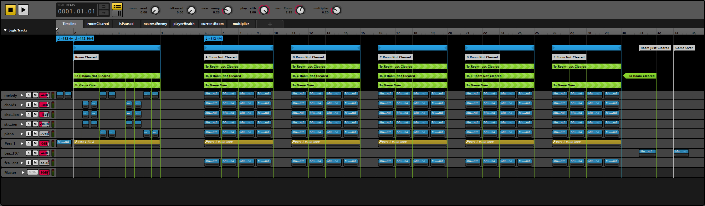

Sourcerror (Re:Volt)
This is my sophmore game, Sourcerror. It's a 2D top-down arcade game where the player goes around clearing rooms of enemies and trying to get a high score. I was in charge of all audio content creation and worked with my audio programmer to implement the FMOD events and musical transitions.
SFX
In its early stages, the backstory to the game was that Sourcerror (then called Re:Volt) would be set in a future world controlled by replicant-esque computers, and some of the remaining humans would fight their way deeper and deeper underground to eventually reach The Core, and there would be a boss fight for the fate of the world. Although we eventually had to abandon that story for something simpler, we carried on the idea of a human fighting computer-enhanced beings. Using this as my inspiration, each of the enemies has a set of human-voiced vocalizations that have been filtered to give them that synthetic feel. I also tried out different approaches to vocalizing the player character's actions, but with all the chaos of the game, I felt it best for them to stay a silent warrior.
Music
From the start, we wanted the music to feature synths and very little acoustic instruments. I wanted to keep the instrumentation fairly simple to match our art style and for the complexity to come from its adaptivity.
Level Music
Our game was very fast-paced in nature. As you can see in the trailer, each room only takes about ten seconds to clear; far too little time to give each room its own piece of music. Also, because Sourcerror has no set end, it didn't make sense to me to write different pieces of music for each level. There would either be a good amount of music people who would only play the game once or twice would never hear, or levels' music would get reused, which may be confusing to someone who is getting far in the game. Instead, I opted for one peice of level music, and for each room to have its own melodic theme. Every room has a nine-second segment of music that will repeat for however long the player stays in that room. Tracks will also fade in and out based on parameters like the player's health and how physically close they are to an enemy. As a result, my FMOD event looked like this:

Pretty crazy, right? Every segment has a reverb tail I would have hated to cut off, so each one is in its own multi sound (or multi instrument now, I guess) container so once it is triggered it will play to its end, even if the music transitions.
It was a lot of fun to compose the music and put together the FMOD event, and very satisfying to hear happen in the game. My only regret is that the melodies may be too similar to each other to be noticed as adaptive, but I do appreciate how it complements the gameplay in a non-intrusive way.
Main Menu
As for our main menu music, I wanted it to be relaxing. I had just written the beginning of the Prelude to the Fugue in D Minor and really liked the idea of having the piano do some kind of arpeggio, and that being the melody the listener was supposed to focus on. Every other instrument complements the piano in some way, but does its best not to steal its spotlight. I recorded my good friend Thomas Parrish playing the piano, and I think we're both happy with the way the recording and the peice as a whole turned out.